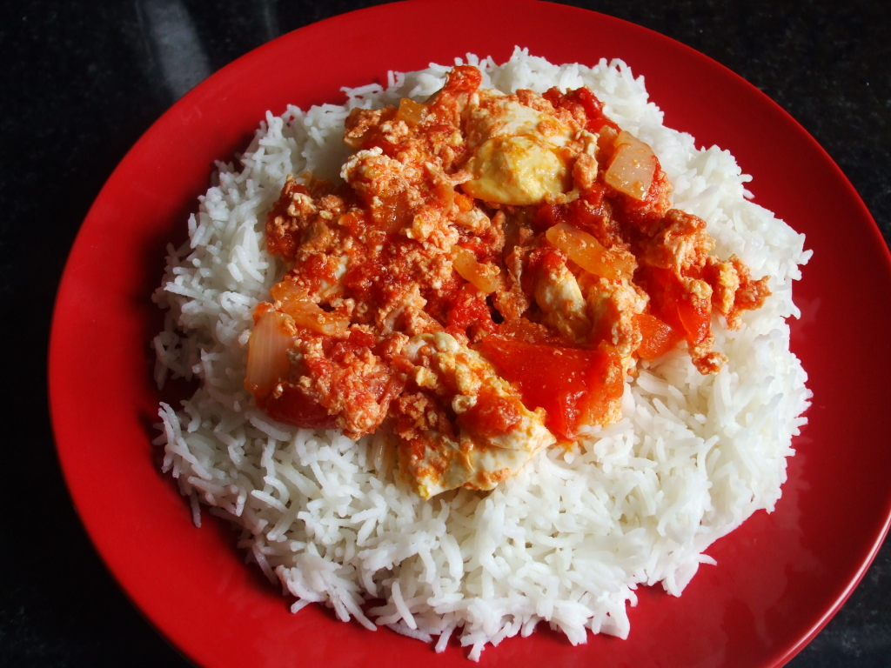

Rice and Stew

Rice and Stew a personal African Favorite
What is Rice and Stew
?
Rice and Stew
is a common traditional meal from my home country, Cameroon.
It is made up of white rice, stew and lots of meat and fish
I lovee to eat Rice and Stew!
Ingredients used to cook Rice and Stew
Steps to Cook some Rice and Stew
(P.s this is not accurate)
- Wash the Rice
- Boil the rice
- Cook the stew
- Finally add the meat
- Add some pepper
- Serve and enjoy